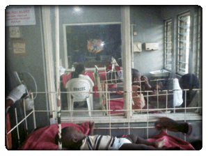

Mission
Using professionals to create an enabling environment for women and youth through Reproductive Health and Sexuality Education.
Objectives Design
- To develop women and children, especially girls through gender-specific initiatives
- To promote the advancement of education and health care needs of women and children
- To initiate, Encourage and Support programmes/reseach that Improve and promote prevention and control of HIV/AIDS
- To evaluate of Drug Therapy and Disease Management in children, especially those Living in Orphanages and those living with HIV/AIDS
Thematic Focus/Area of Specialization
- Promoting the Rights of the Child
- Heath: Adolescent/Women's Reproductive Health & Sexuality Education
- Youth Participation/Empowerment
- Leadership, Life Training & Skills Acquisition
- Gender-Specific Development Initiatives
Divine Ambassadors' Foundation (DIVAF)
We involve the benefiary communities in the Planning, Implementation, Monitoring and Evaluation of projects making our expertise readily available for their use. Such community projects include:
- Malaria
- HIV/AIDS
- Vaccine Preventable Diseases
- Rational Use of Drugs: Patient Adherence (Compliance), Storage of Drugs at Home, etc.
- Public Health Education
- Adolescent Reproductive Health and Sexuality Education
- Gender-Sensitive Initiatives